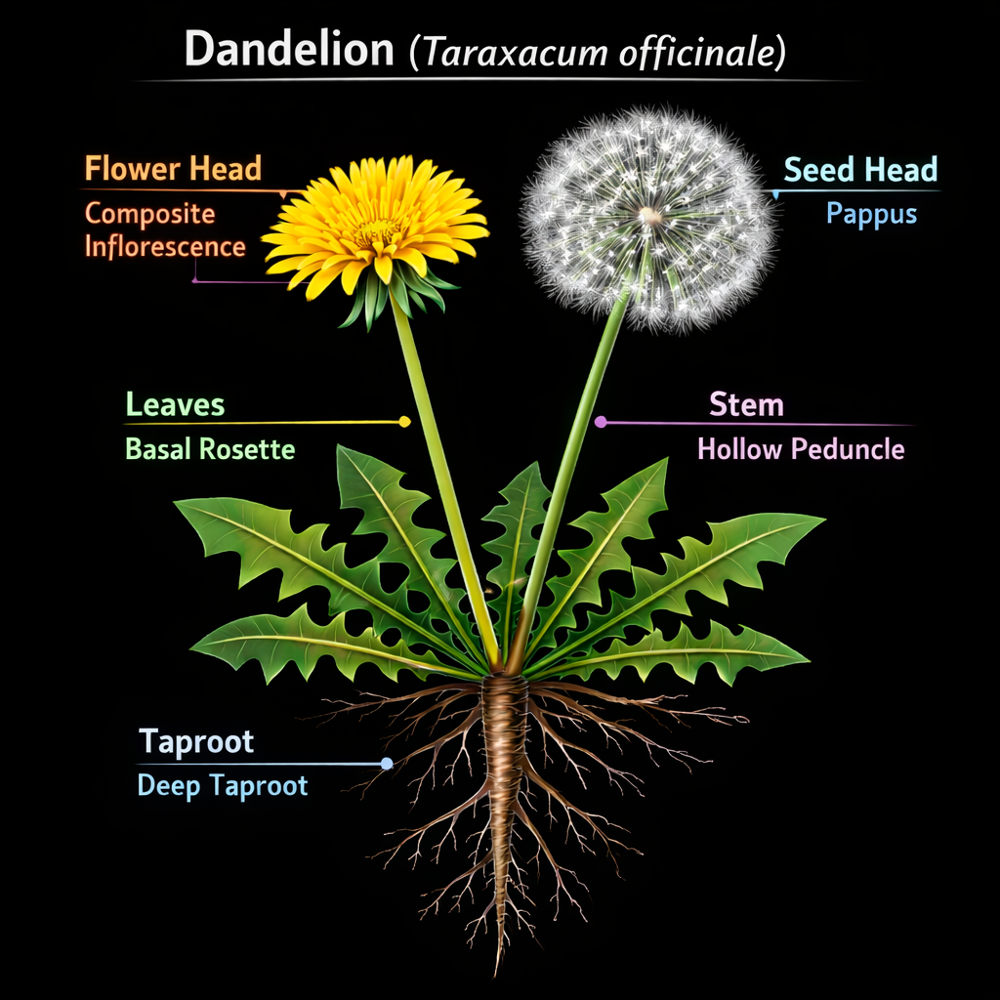

🌼 Dandelion Memetics
The Semiotics & Signal Theory of a Dandelion
I. 🧬 Object Layer — What It Is
A dandelion is a low-growing perennial with a basal rosette, a single hollow stem, a composite yellow flower, a seed head designed for wind dispersal, and a deep taproot storing energy.
At the biological level, it is optimized for persistence, rapid colonization, and distributed reproduction.
It does not dominate by force. It spreads by presence, timing, and replication.
II. 📡 Signal Layer — What It Emits
Before meaning comes signal.
A dandelion emits color signal, shape signal, motion signal, and transformation signal.
The plant is not passive. It is constantly broadcasting sensory hooks into perception. This is where semiotics begins.
III. 🧠 Perception Layer — What The Mind Builds
The brain does not see “plant.” It constructs flower, weed, wish object, childhood memory, or yard problem.
Same object. Multiple realities.
Meaning is not in the dandelion. Meaning is installed onto it.
IV. 🧩 Semiotic Layer — What It Means
The dandelion functions as a multi-symbol node.
Positive frame: resilience, freedom, wishes, dreams, natural beauty, childhood innocence.
Negative frame: weed, nuisance, neglect, invasion, lack of control.
The dandelion is a frame-sensitive object. The meaning changes based on the observer’s system, not the object itself.
V. 🧠 Memetic Layer — How It Spreads
The dandelion is a perfect natural meme structure.
Seeds disperse via wind. Ideas spread via networks.
Pappus becomes shareability. Many seeds become high replication. Random landing becomes unpredictable audience reach. Viable seeds become resonant ideas.
A dandelion doesn’t convince soil. It blankets possibility until something takes root.
VI. ⚙️ System Layer — The Propagation Engine
The dandelion operates like a decentralized system: low entry barrier, high redundancy, environmental adaptation, and persistence loop.
Remove the surface and it returns later. That’s not just a plant. That’s a system with memory.
VII. 🌪️ Signal Theory of a Dandelion
Phase 1: Signal Creation — bright flower captures attention.
Phase 2: Perception Engine — mind categorizes flower, weed, or memory.
Phase 3: Attention Engine — wind disperses seeds.
Phase 4: Identity Engine — gardener sees enemy, child sees magic.
Phase 5: Reality Field — lawns, culture, and aesthetics define its place.
Phase 6: Adaptation System — humans kill it, ignore it, romanticize it, or use it medicinally.
VIII. 🧪 Uses — Function Beyond Symbol
The dandelion quietly resists its “weed” label.
It can function as food, medicine, pollinator support, and soil work.
The “useless weed” frame collapses under inspection. Meaning does not equal function.
IX. 🎭 Framing — The Control Mechanism
Who controls the meaning of a dandelion?
Lawn culture says remove it. Herbalists say use it. Artists say admire it. Children say blow it.
Same object. Different scripts.
Control the frame. Control the reaction.
X. 🧠 Final Synthesis
The dandelion is a biological replicator, a memetic blueprint, a semiotic chameleon, a signal generator, and a system survivor.
It teaches one core principle: spread does not require permission. It requires structure.
